Visit Qatar Experience
Storyboard
19 boards · voice-over under each board · work in progress
No voice-over
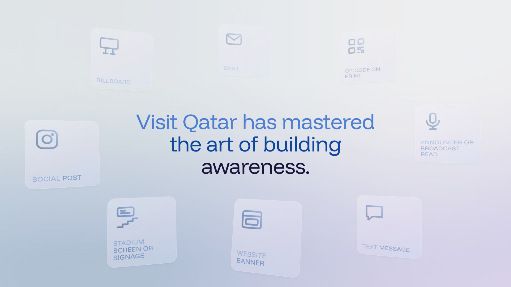
You’ve mastered the art of building awareness. A social post, a text message, an email, a website banner…
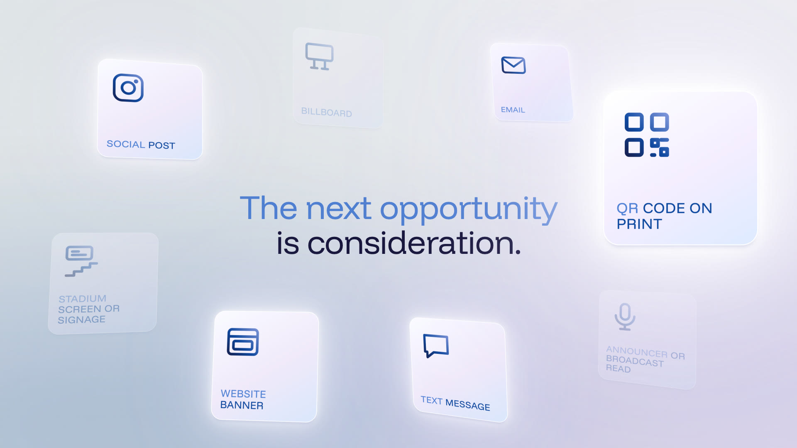
…a QR code, a billboard, a stadium screen, an announcer’s read. The next opportunity is consideration.
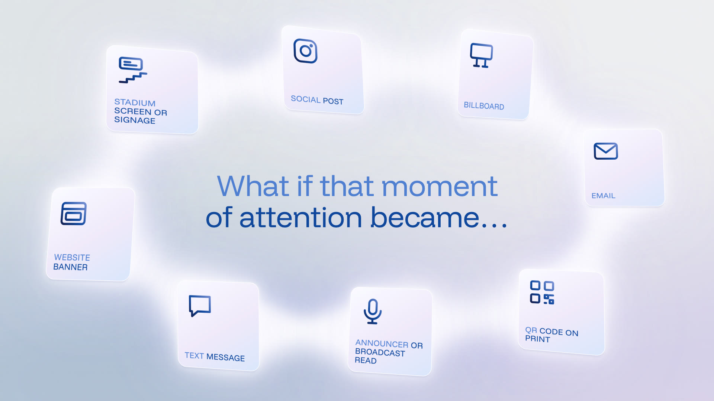
What if each of those moments of attention became…
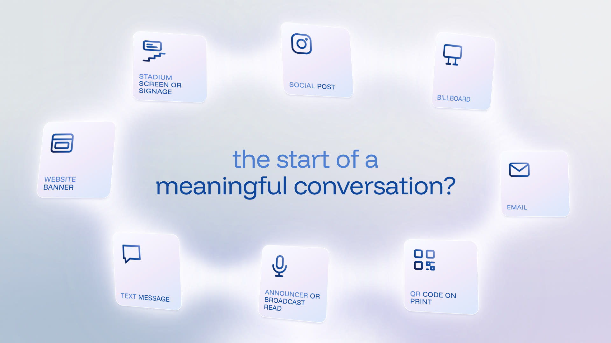
the start of a meaningful conversation?
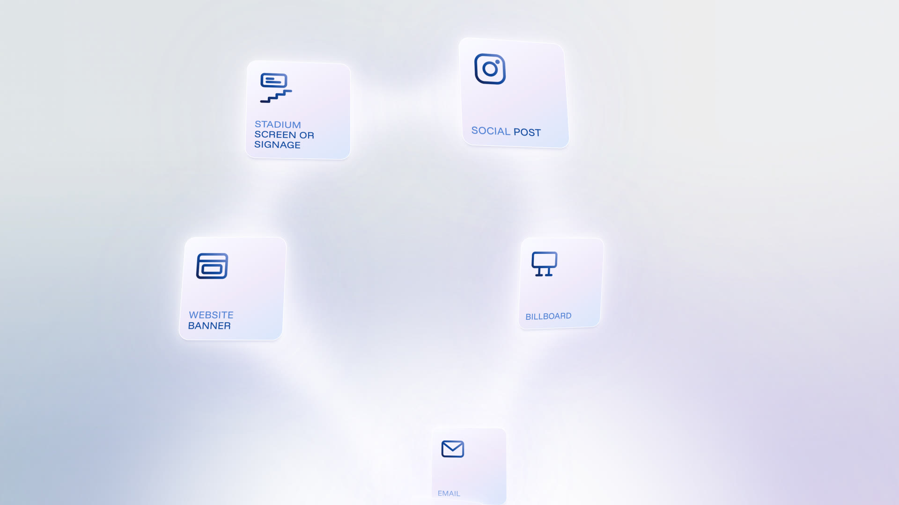
One that understands what matters to each person, and guides them toward a decision.
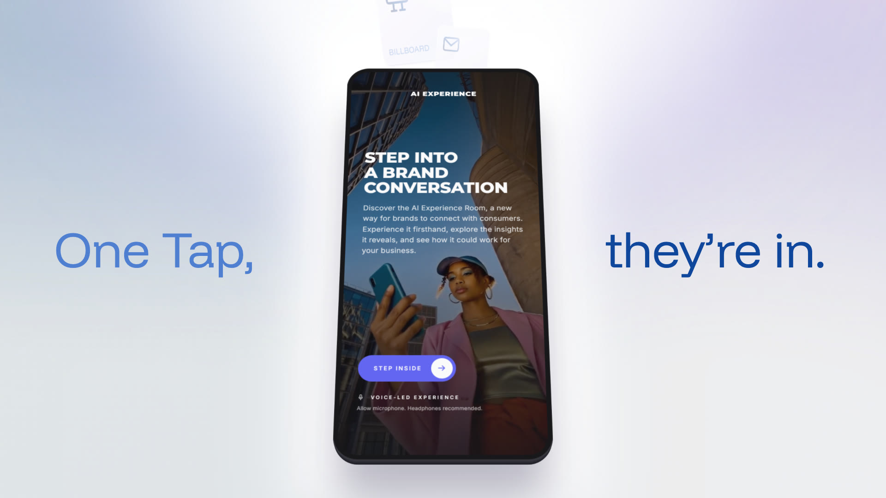
One tap, and they’re in.
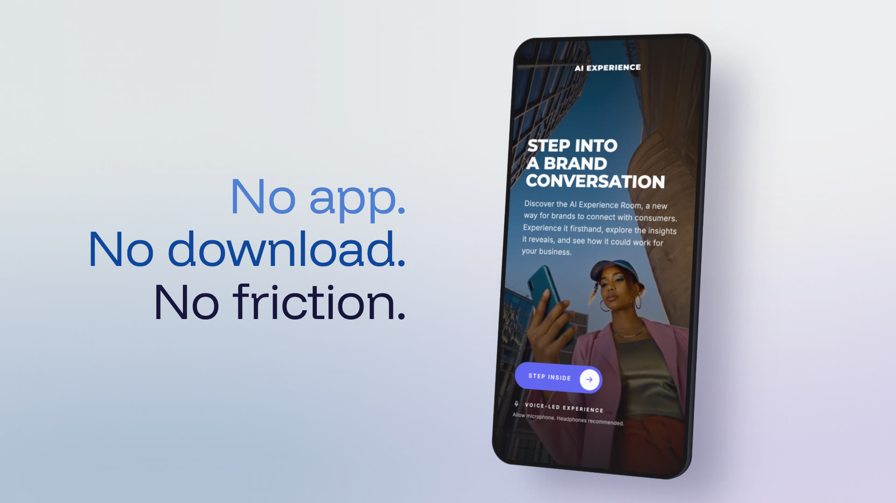
It’s web, so it lives wherever you put the link. No app, no download, no friction.
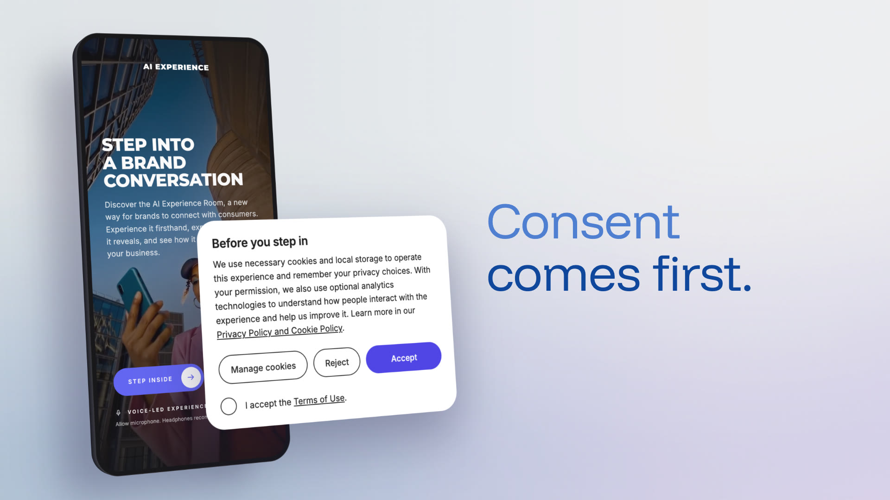
Consent comes first, in plain language: the experience listens when you speak.
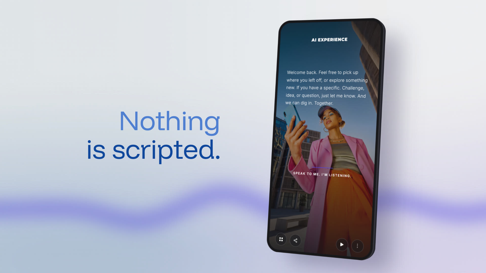
Then the AI speaks first. Nothing is scripted: it adapts to the place, the moment, the person.
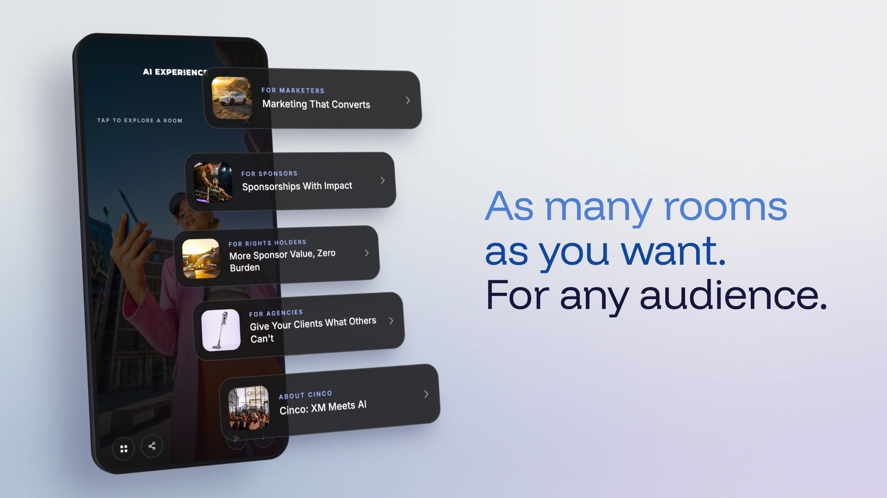
It asks what they’re looking for, and guides them to the right room. As many rooms as you want, for any audience.
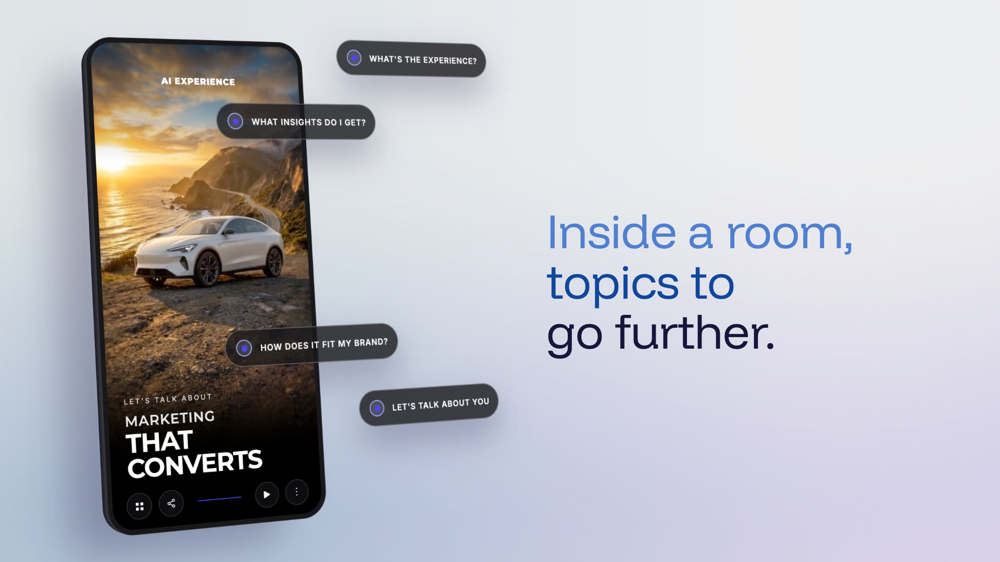
Inside a room, topics take the conversation further. You choose the territories; the conversation stays free inside.
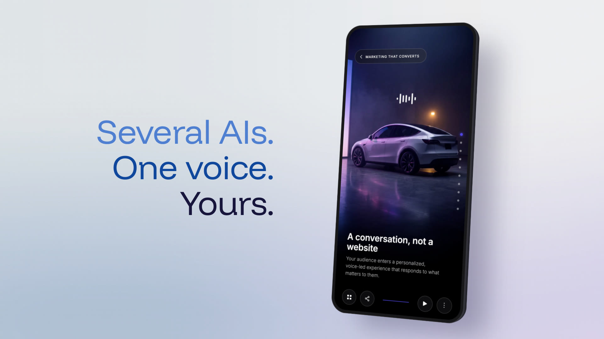
The intelligence is in the conversation: several AIs read the signals, shape the answer, and keep your brand’s voice.
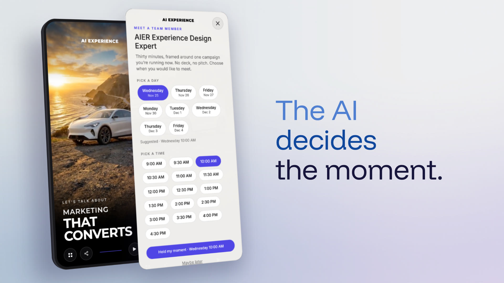
You decide the actions. The AI decides the moment: when the signals say they’re ready, not before.
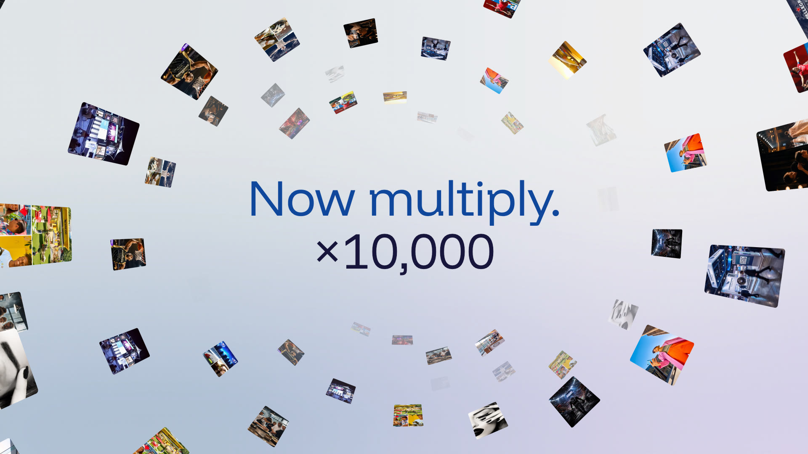
That was one conversation. Now multiply by ten thousand: what people really want, and what no focus group will tell you.
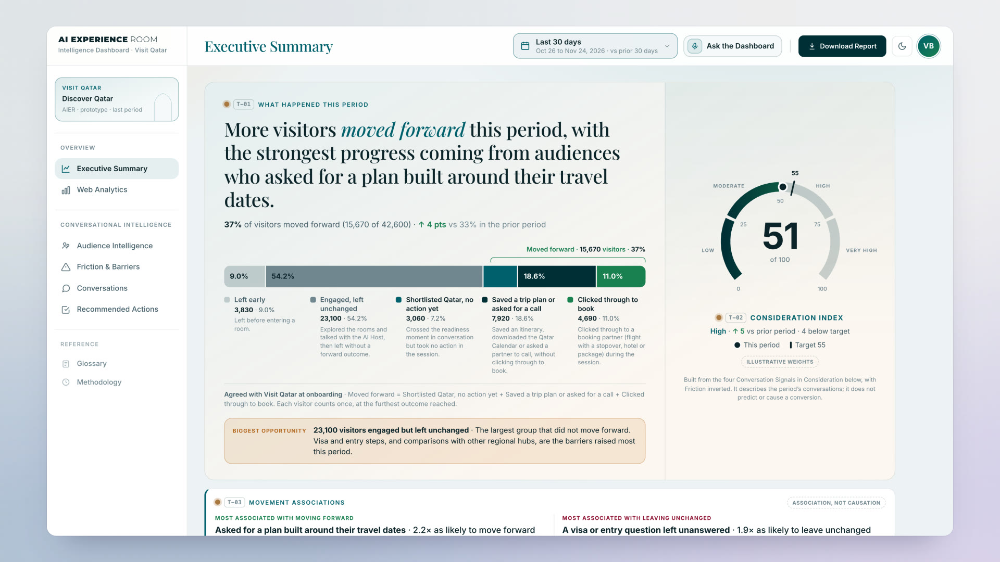
And it doesn’t just create conversations. It tells you what they mean.
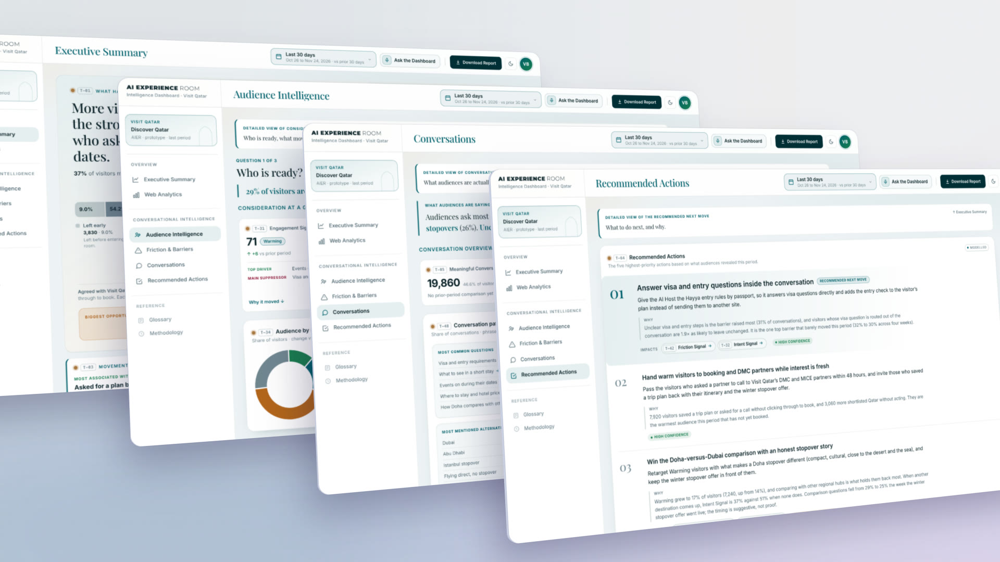
No analyst required: who is ready, what holds them back, what people are really saying, and what to do next.
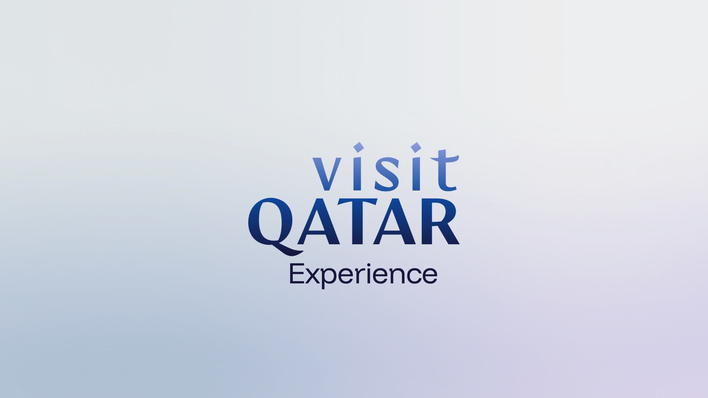
Welcome to your AI Experience Room.
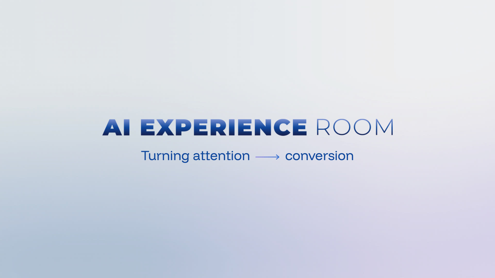
The AI Experience Room. Turning attention into conversion.